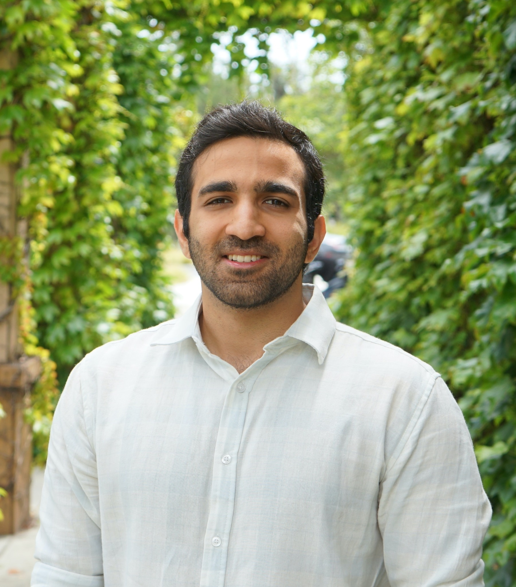

Presented research on safety-aware autonomous fleet routing under human traffic equilibrium at the INFORMS Annual Meeting in San Francisco.
PH.D. CANDIDATE · UC IRVINE

Shakib
Kafashan.
Making transportation
more efficient. And safer.
I work at the intersection of transportation, optimization, and autonomous systems—turning uncertainty into better decisions, from individual vehicles to entire networks.
A CLOSER LOOK AT MY RESEARCH
MANHATTAN · NEW YORK CITY
City-scale decisions
Better routes. A bigger picture.
Coordinated vehicles share the streets with everyday traffic. Explore how their route choices can change.
Faster routesAvoid busier crossings
Coordinated vehiclesOther trafficBusy crossings
Seeing beyond a single possible path.
The cars keep moving. Height shows speed; the ribbons show how future motion can vary.
Watching the encounterVERTICAL AXIS · SPEED
Through vehicle earlierLater
More consistentMore variable
Turning vehicleThrough vehiclePossible contact
How these animations work +
City routing: Manhattan streets, 3D building footprints, and a simplified shoreline with illustrative traffic. Building heights are visually emphasized for clarity. Blue vehicles represent a coordinated fleet; white vehicles represent other road users. The control blends faster routes with alternatives that avoid crossings used more often in the synthetic baseline. This is an illustration of routing choices, not measured New York traffic or a network safety result. Short trails follow the same street geometry as the vehicles.
Vehicle Tube Model: two moving vehicles follow prescribed paths. At each moment, the model considers possible speeds and a reaction-and-braking response. The colored ribbons show those possible future body positions. Height represents speed, while contact is checked using vehicle bodies on the road at the same future instant. Separation in the speed axis does not imply physical separation.
The encounter loops continuously in both road and 3D views. Its nominal vehicles keep driving; the stopping response belongs to the conditional forecast.
Model details: 4.5 × 1.8 m bodies, independent bounded uniform speed distributions, reaction time 0.5 s, braking 3 m/s². The forecast horizon includes the full stopping response. Model probability is estimated with 32 × 32 speed pairs and future-time steps no greater than 0.06 s.
Current model probability:
MODEL PROBABILITYENCOUNTER PROGRESS →
Synthetic scenarios · model estimates are not calibrated real-world crash probabilities.
Interactive research illustrations© OSM · NYC DCP
LATEST UPDATES
Latest news
Received the Outstanding Teaching Assistant Award in Civil and Environmental Engineering from the UCI Samueli School of Engineering.
Our Vehicle Tube Model manuscript has been submitted to Accident Analysis & Prevention.
Our paper on the annualized cost of electric and diesel construction machinery was published in Sustainability.
Presented our comparative economic analysis of electric and diesel construction machinery at the 104th TRB Annual Meeting.
PAPERS & RESEARCH
Selected publications
JOURNAL ARTICLE
Building Sustainably: Annualized Cost of Ownership, Externalities, and the Electrification of Construction Machinery
Shakib Kafashan and Jean-Daniel Saphores
Sustainability, 18(12), 6343
PublishedRead publication ↗
Overview +
An annualized ownership-cost framework with mobile charging, operational externalities, and correlated Monte Carlo uncertainty for electric and diesel construction machinery.
VEHICLE INTERACTIONS · UNCERTAINTY
A Vehicle Tube Model for Collision Probability Assessment Under Motion Uncertainty
Shakib Kafashan, Pengyuan Sun, and R. Jayakrishnan
Accident Analysis & Prevention
SubmittedOverview +
A geometric framework for modeled pairwise vehicle-contact probability under uncertain speed along prescribed paths, studied across following, crossing, turning, and merging interactions.
BILEVEL OPTIMIZATION · NETWORK DESIGN
A Globally Optimal Branch-and-Price-and-Cut Algorithm for Bilevel Optimization of Detour-Sign Placement
Shaghayegh Nouhi, Shakib Kafashan (corresponding author), and Michael W. Levin
Transportation Research Record
Under reviewOverview +
A certifiable branch-and-price-and-cut framework for choosing detour-sign locations while accounting for travelers’ user-equilibrium response.
MACHINE LEARNING · TRANSPORTATION SAFETY
Reporting-Aware Prediction of U.S. Transit Collision Severity: Temporal and Cross-Agency Validation
Shakib Kafashan, Fahim Kafashan, R. Jayakrishnan, and Ali Hajbabaie
Data Science for Transportation
Under reviewOverview +
Reporting-aware modeling of 36,468 transit-bus collisions, with temporal and cross-agency validation and probability calibration.
ROBUST CONTROL · AUTONOMOUS FREIGHT
Human–Autonomous Freight Control with Scarce Human Fallback: Protecting Critical Service on Mount Everest
Shakib Kafashan, Michael Hyland, and R. Jayakrishnan
Working paper
In preparationOverview +
Distributionally robust receding-horizon control for allocating uncertain autonomous freight service, scarce human fallback, and shipment deferral.
PROBABILISTIC CLASSIFICATION · CALIBRATION
Reassessing Resampling for Crash Injury Severity Prediction: The Roles of Calibration and Threshold Selection
Shakib Kafashan, Fahim Kafashan, Ali Hajbabaie, and R. Jayakrishnan
Working paper
In preparationOverview +
Examines how calibration and threshold selection change the apparent value of resampling for imbalanced crash-injury classification.
RISK OPTIMIZATION · ELECTRIC VEHICLES
Used Electric-Vehicle Affordability, Fuel-Price Resilience, and Emissions Trade-offs
Shakib Kafashan, R. Jayakrishnan, and Jean-Daniel Saphores
Working paper
Working paperOverview +
Affordability and service-feasibility modeling, fuel-price stress testing, and distributionally robust policy allocation.
STATISTICAL MODELING · TRANSPORTATION SAFETY
Collision Context and Conditional Injury Severity in U.S. Transit-Bus Collisions Involving Vulnerable Road Users
Shakib Kafashan, Fahim Kafashan, Ali Hajbabaie, and R. Jayakrishnan
Working paper
Working paperOverview +
Statistical assessment of conditional fatal-injury severity among reported vulnerable-road-user casualties, with agency-clustered inference and temporal stability checks.
CONFERENCE PRESENTATION
Safety-aware autonomous fleet routing under human traffic equilibrium
Shakib Kafashan
INFORMS Annual Meeting · San Francisco
PresentedOverview +
A network-level framework connecting autonomous-fleet routing decisions, the response of human-driven traffic, and safety.
CONFERENCE PRESENTATION
Electrification of Off-Road Construction Vehicles: A Comparative Economic Analysis of Electric and Diesel Machinery
Shakib Kafashan and Jean-Daniel Saphores
104th Annual Meeting of the Transportation Research Board · Washington, D.C.
PresentedRead publication ↗
Overview +
An economic comparison of electric and diesel construction machinery using total ownership cost and Monte Carlo analysis.
RESEARCH REPORT
Zero-Emission Vehicle Transition in California’s Construction Industry
Shakib Kafashan and Jean-Daniel Saphores
University of California Institute of Transportation Studies
PublishedRead publication ↗
Overview +
Infrastructure, institutional, and charging challenges in the transition to electric construction equipment.
POLICY BRIEF
Can California Power Electric Construction Equipment at Scale?
Shakib Kafashan and Jean-Daniel Saphores
University of California Institute of Transportation Studies
PublishedRead publication ↗
Overview +
Practical power-access challenges and potential pathways for construction-site electrification.
Showing 12 works
BACKGROUND & EXPERIENCE
Curriculum vitae
Education
Ph.D. in Civil Engineering
University of California, Irvine
Transportation Systems
M.S. in Civil Engineering
University of California, Irvine
Transportation Systems
B.Sc. in Civil Engineering
Sharif University of Technology
Experience
Graduate Student Researcher
UC Irvine · Institute of Transportation StudiesResearch in network optimization, autonomous transportation, probabilistic vehicle-interaction assessment, and decisions under uncertainty.
Transportation electrification research
UC IrvineEconomic assessment of electric and diesel construction machinery, charging infrastructure, and uncertainty in ownership costs.
Honors and awards
Outstanding Teaching Assistant Award
Civil and Environmental Engineering
Samueli School of Engineering · University of California, Irvine
Teaching
Teaching Assistant · University of California, Irvine
Civil Engineering Practicum I
With Professor R. Jayakrishnan
Systems Analysis and Decision-Making
With Professor Michael Hyland
Talks
Safety-aware autonomous fleet routing under human traffic equilibrium
INFORMS Annual Meeting · San Francisco, California
Research overview ↗Electrification of Off-Road Construction Vehicles
104th Annual Meeting of the Transportation Research Board · Washington, D.C.
Publication ↗LET’S CONNECT
Contact
For research, collaboration, or professional opportunities.
Institute of Transportation Studies
University of California, Irvine · Irvine, California